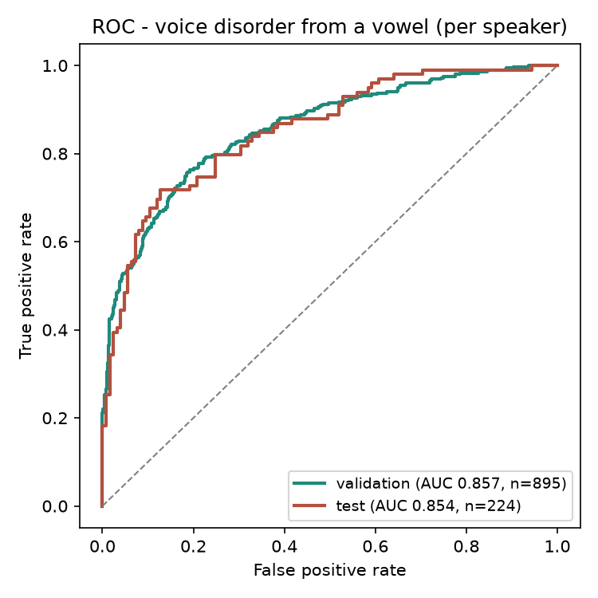

An AI model that hears a sustained vowel and estimates the chance of an organic voice disorder. Trained on 1,119 speakers, AUC 0.866.
BACKEND at the top of
the script in docs/index.html to its URL.
Say “aaah” and hold it steady for a few seconds.
Record here in the browser, or upload a .wav.
Evaluated speaker-independent (no speaker in both train and test), per-speaker AUC 0.866, 95% CI [0.844, 0.888]. This is a screening aid, not a diagnosis.

Your recording is sent to the scoring server, held in memory long enough to extract 88 acoustic features, and discarded. It is never written to disk or stored.